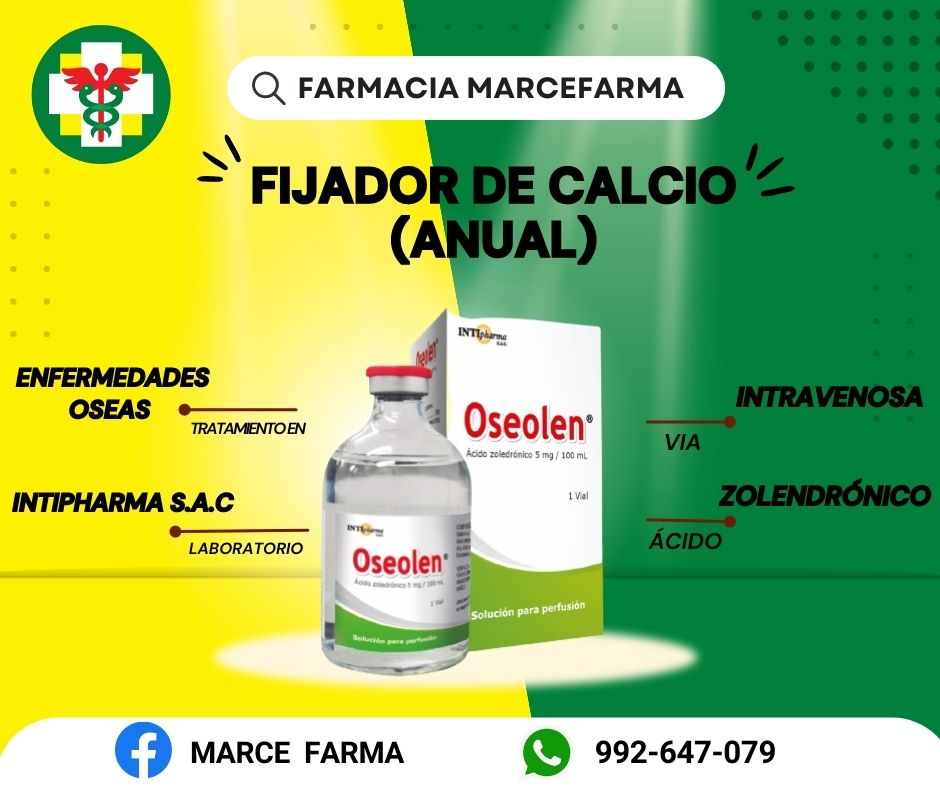

Oseolen 5mg/100ml Solución para Perfusión
Precio Regular: S/ 920.00
FIJADOR DE CALCIO ANUAL (Acido Zoledrónico 5mg/100ml) 💪🏻 Medicamento indicado en adultos con OSTEOPOROSIS AHORA S/920.00 - ANTES S/1300.00 ✨Beneficios:✨ 🤍Previene y trata la Osteoporosis 🤍Aumento de la densidad Mineral Ósea 🤍Disminuye el riesgo de fracturas clínicas (en vertebras, cadera y otras partes del cuerpo) 🎁De regalo tratamiento de calcio de un mes (30 Tabletas de citrato de calcio 1500mg + Vitamina D3 400UI) 💝 📝Atención Personalizada 📝Aplicado por profesional de salud
- R.S.: EE081023
- Código ATC: M05BA08
- Presentación: Caja 1 Vial
S/ 1,200.0
S/ 1,100.0
Agregar al carrito